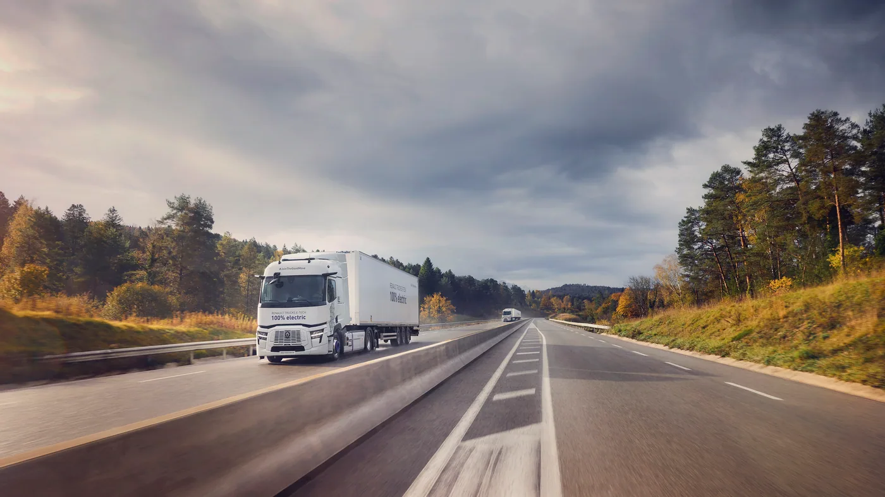

Renault Trucks presentó el 14 de septiembre de 2026 sus novedades en Hannover. El motor DE13 R y una nueva generación de cajas Optidriver llegarán a las gamas T, T High, C y K del año modelo 2027. El fabricante anuncia hasta un 4% de reducción de consumo frente a la generación anterior.
En eléctricos, la presentación incluye al E-Tech T 780, con autonomía declarada de hasta 660 kilómetros, y distintas versiones para distribución. La oferta muestra dos líneas de desarrollo simultáneas: actualizar las motorizaciones convencionales y ampliar las aplicaciones eléctricas.
Los porcentajes y alcances son datos del fabricante para sus configuraciones y condiciones de referencia. El comunicado europeo no confirma fechas de venta ni equipamientos para Argentina. Año modelo, fecha de presentación y disponibilidad efectiva son conceptos diferentes.
La transición no exige que todas las tareas sean iguales
Análisis de Zabala Repuestos. Una empresa puede atender servicios con recorridos y exigencias muy distintos. Por eso, la conversación sobre tecnología resulta más útil cuando se organiza por aplicación. Elegir una solución para una tarea no obliga a suponer que resolverá del mismo modo todas las demás.
Un primer paso consiste en agrupar los servicios según lo que necesitan: horarios, carga, distancia y posibilidades de atención. Ese mapa permite reconocer dónde existe una rutina estable y dónde se exige mayor flexibilidad. También evita comparar unidades que no están destinadas al mismo trabajo.
Cómo leer una mejora de consumo
Ante una cifra anunciada, conviene preguntar cuál es el vehículo de referencia y qué configuración se evaluó. Para una prueba propia, la empresa debería conservar las condiciones del recorrido junto al resultado. La comparación pierde claridad si se modifican varias variables sin dejar registro.
También importa no convertir una mejora de un componente en una conclusión sobre todo el servicio. La organización de viajes, las esperas y la atención de la unidad pueden necesitar una revisión independiente. Identificar cada dimensión permite entender mejor dónde se produjo un cambio.

La alternativa eléctrica se estudia con el recorrido completo
Un análisis de aplicación debería describir salida, entregas, detenciones y retorno. El lugar y el momento en que puede atenderse la necesidad energética forman parte del plan. No basta con comparar la distancia diaria con una autonomía máxima publicada.
La flota también puede pedir que se expliciten las condiciones excepcionales. Qué sucede si cambia el destino o se retrasa la recepción ayuda a reconocer los márgenes de la propuesta. Un plan de contingencia no descalifica una tecnología: permite entender cómo se sostendrá el servicio.
Una flota mixta necesita información ordenada
Cuando conviven distintas versiones, resulta importante que cada unidad tenga su identificación y documentación accesibles. El taller necesita saber qué configuración está atendiendo, no únicamente qué emblema lleva en el frente. Esto también mejora la calidad de las consultas de repuestos.
Las tareas deben organizarse según los procedimientos oficiales de cada equipo. La experiencia acumulada es valiosa, pero no reemplaza la formación específica cuando cambia un sistema. Delimitar quién puede intervenir y quién debe recibir una consulta ayuda a evitar suposiciones.
Qué observar después de una presentación
Las noticias de lanzamiento son el comienzo de una historia de producto. Más adelante interesa conocer experiencias de uso, versiones ofrecidas y respaldo disponible. Para un comprador, mantener una lista de preguntas pendientes puede ser más útil que intentar decidir con la información inicial.
Desde Argentina, esa revisión debe incluir confirmación local de producto y atención. La convivencia de opciones abre posibilidades, pero cada propuesta necesita demostrar que puede responder a una tarea concreta. La mejor comparación será la que permita explicar condiciones, límites y responsabilidades con claridad.
La presentación de Renault Trucks deja precisamente esa conversación abierta: cómo aprovechar mejoras de distintas tecnologías sin perder de vista el trabajo que debe cumplirse. El criterio de elección sigue siendo el servicio real, acompañado por documentación y soporte verificables.